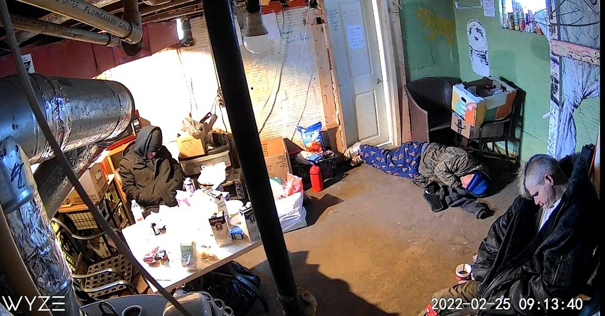

Timeline photos
These are 3 homeless men that have come in from a night living outside to find some warmth at our house. Only this morning there is no warmth. Our 30-year-old furnace has finally, completely died. We have repaired it and repaired and repaired it. Now there is no more repairing.
Without a clear way to pay to replace it, I have told the furnace people to replace the furnace today. I cannot let these people suffer more than they are already suffering. The furnace will be replaced today for $2500.
On top of this being a place where homeless people can rest and come together as a family, we also have a shower and toilet and internet and a phone they are welcome to use any time.
On top of that, the house also houses 3 formerly homeless people... all of whom have lived in tents for long stretches of time in their lives. We have an African American senior citizen who is significantly physically disabled, a veteran with cancer and a woman who hasn't been housed for years.
I just am not going to let them sit in a house without a furnace.
But the only way I can make this financially happen is with your help.
I truly need to raise this money.
If you are able to help with this cause I really need your help.
Please help us here:
https://donorbox.org/new-furnace-for-the-houseless-movement-house
Thank you for everything you have done for our houseless neighbors. We are nothing without you.
Sage